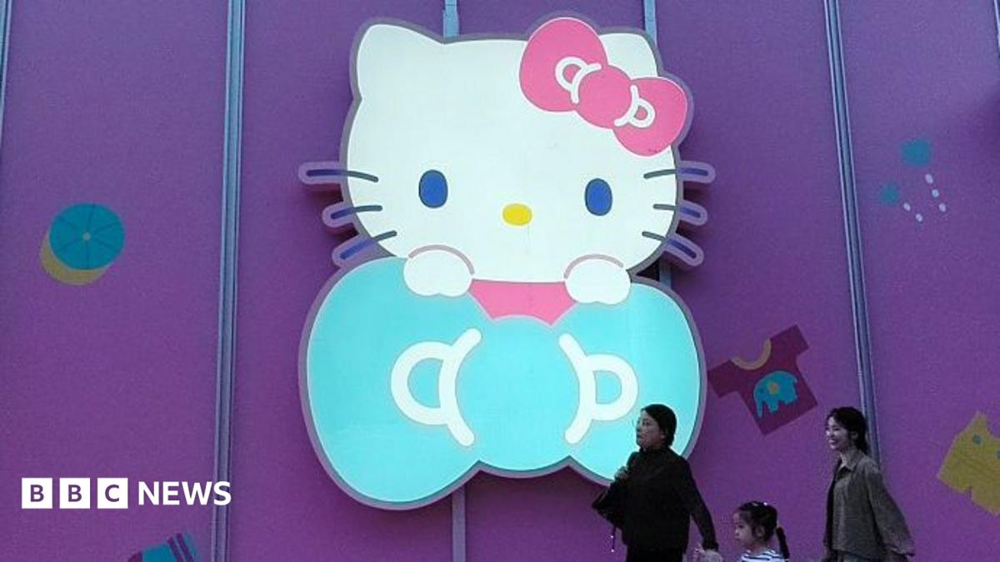

World · 29 Oct 2026
Hello Kitty maker cuts ties with Japanese spy drama after China backlash

Sanrio has apologised after its merchandise line with Japanese TV series Vivant drew criticism.
Multiple independent publishers are reporting on the same development: Hello Kitty maker cuts ties with Japanese spy drama after China backlash.
The available reports place the development in the World category. The accounts were compared for agreement on the central event rather than simply shared names or broad topics.
One of the available reports describes the development this way: Sanrio has apologised after its merchandise line with Japanese TV series Vivant drew criticism.
Readers should consult the linked source reports for additional context, updates and details that may change as the story develops.
Sources
This article was produced by the C. O. Eric AI Newsroom from the cited sources. It is published only after automated evidence and safety checks.